Two ways to see your crew.
Crew has two top-level views, and you flip between them anytime with the toggle at the bottom of the sidebar (or ⌘K → “Switch view”).
Grid view — mission control
Every session becomes a live tile with its own scrolling terminal, so you can watch the whole crew at a glance. Tiles auto-scroll to the latest output — right where an agent is asking for input.
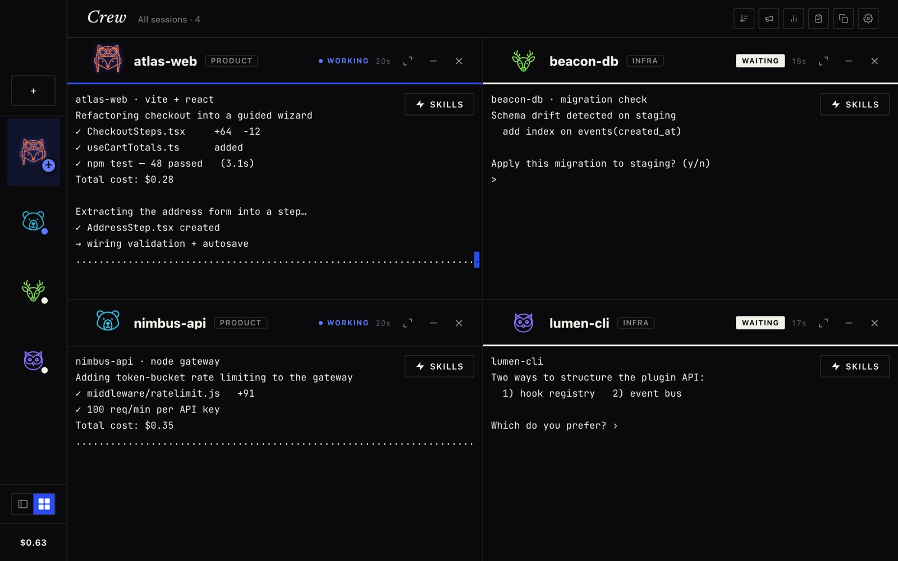
Focus view — one session, full attention
Focus view gives a single session the whole canvas: its full terminal in the middle, the Skills chip and Assets pane on the right, and the roster on the left. Click any session (or press ⌘1–⌘9) to focus it.
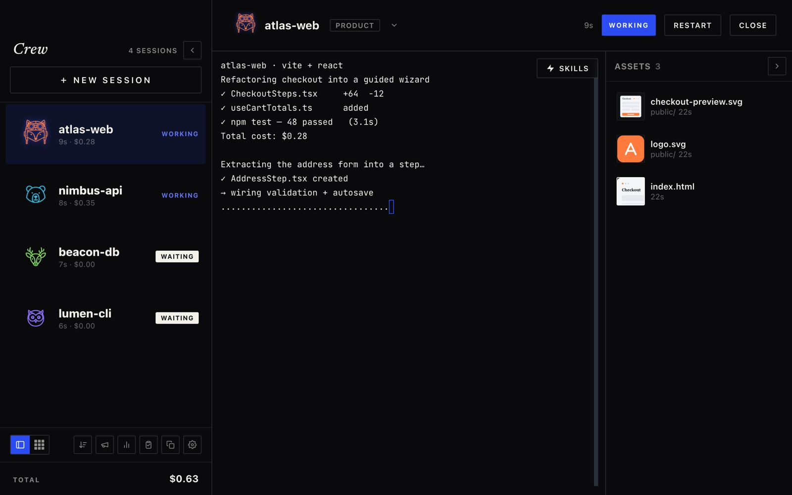
The sidebar.
The left sidebar — the roster — is your list of every session. Each row is a card showing the session’s character, name, how long it’s been in its current state, spend, and a live status.
- ＋ New Session launches an agent (see creating a session).
- Each card shows the animated character, the label, time-in-state, optional spend, and a status tag. Drag cards to reorder them.
- Hover a card for its minimize (hide behind “Show more”) and close controls; exited sessions show a restart ↻.
- The Crew wordmark at the top replays the launch intro; the count shows how many sessions you’re running.
- The footer totals your spend (and credits) across all sessions — it turns to a warning once you pass your budget.
- Drag the sidebar’s right edge to resize it; the ‹ button collapses it to a rail.
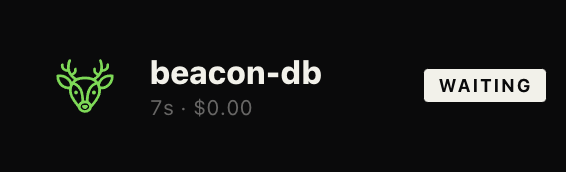
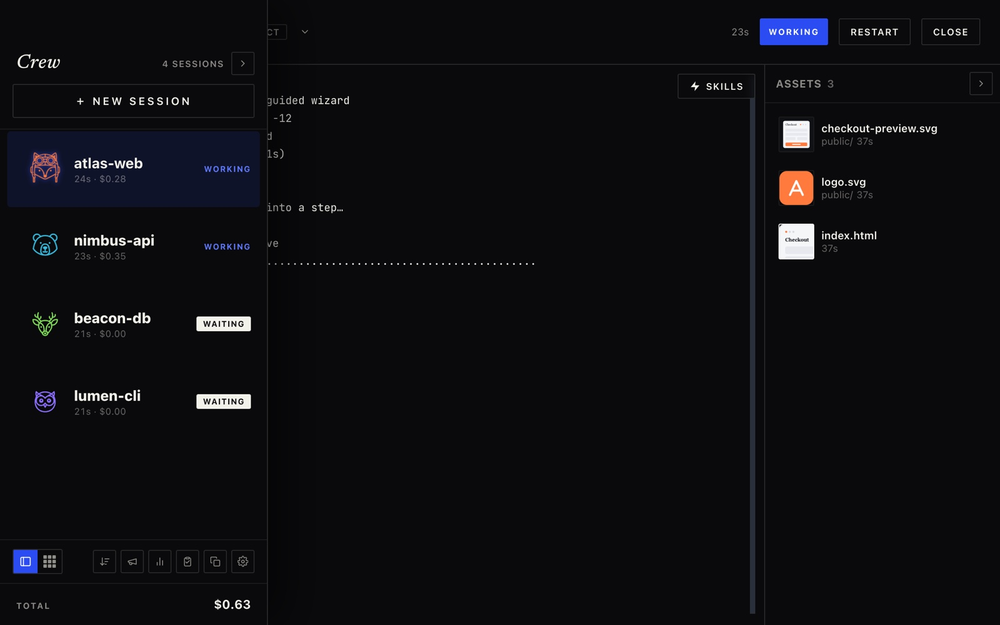
The sidebar toolbar.
A tidy row of controls sits at the very bottom of the sidebar. Left to right:
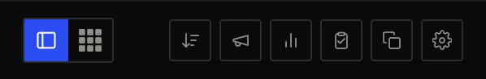
- Focus view — one session, full width.
- Grid view — the live dashboard; click again to change density.
- Sort / group — how the roster is organized (see modes).
- Broadcast — send one prompt to many sessions.
- Activity & spend — the analytics panel.
- Project Tracker — the full-screen project dashboard (see it).
- New window — a second Crew window (⇧⌘N).
- Settings — notifications, spend, transcripts and more.
The session title bar.
In focus view, the header above the terminal is the session’s control strip.
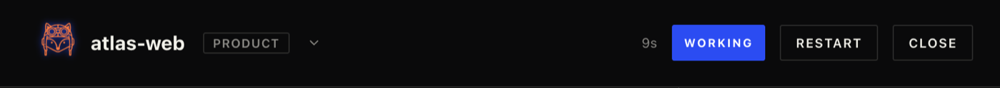
- Character — click to change the icon & color (how).
- Label — click to rename the session inline.
- + Group — tag the session into a group.
- Details — expands the working directory, agent & PID.
- Time-in-state — how long it’s been working / waiting.
- Status — the live state chip.
- Restart — relaunch the agent in place.
- Close — end the session.
Grid tiles.
Each tile in grid view has a compact header over its live terminal. The header is also a drag handle — rearrange tiles by dragging them.
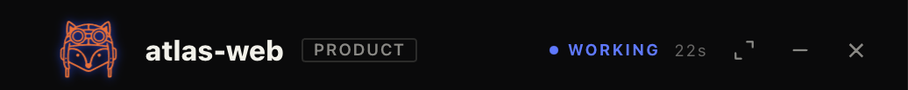
- Character — click to restyle; drag the header to move the tile.
- Label — the session name.
- Group tag — its group chip (click to edit).
- Status & time — working / waiting, and for how long.
- Open in focus — expand this session to the full view.
- Minimize — tuck it behind “Show more”.
- Close — end the session.
A session that needs you glows so it’s obvious even in a crowded grid.
Working vs. waiting.
Because Crew owns each agent’s terminal (its PTY), it sees the full output stream and knows exactly when it last sent input. That lets it tell a busy agent apart from one that’s blocked on you — and surface the difference everywhere.
- Working — output is flowing; the character animates and the chip is cobalt.
- Waiting for you — output went quiet at a prompt; the chip inverts to bright ivory, the loudest state in the app.
- Needs approval — a yes/no gate; answer it from the approval bar.
- Idle / Exited / Error — muted or restrained, so they never compete for attention.
Detection uses output quiescence plus prompt signatures, with a debounce so brief pauses between token bursts don’t flip the dot, and a grace window after you type so echo isn’t mistaken for “done”. A white dot and a menu-bar badge appear when someone needs you; ⌘J jumps straight to the next waiting session.
Characters & colors.
Every session gets its own animal character and color so you can recognize it at a glance — no reading labels. Click the character (in the title bar or on any tile) to open the picker.
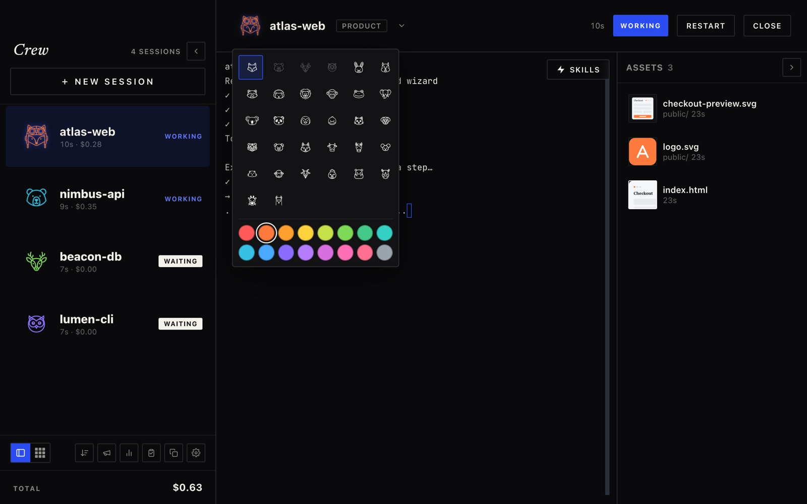
The palette is sixteen hand-tuned hues, bright enough to read against the near-black UI:
New sessions get a random color; change it anytime — it’s remembered per session.
Creating a session.
Hit ＋ New Session (or ⌘N) to launch an agent. Crew detects the agents you have installed (Claude Code, Copilot CLI…) so you can pick one from a list.
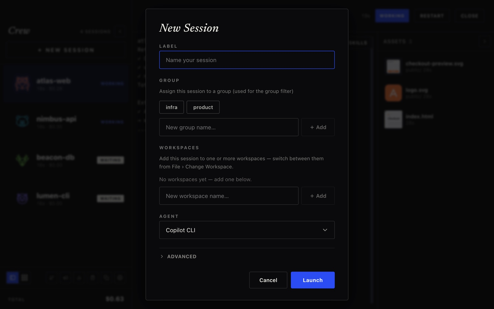
- Label — an optional name (auto-derived from the folder + agent if blank).
- Group — assign a single group tag, used by the “By group” sort.
- Workspaces — add it to one or more workspaces to filter by later.
- Agent — Claude Code, Copilot CLI, a plain Shell, or Custom command… with your own command + arguments.
Open Advanced for an initial prompt sent on launch, a custom working directory, and saved sets — snapshot the currently open sessions under a name and relaunch them all in one click later.
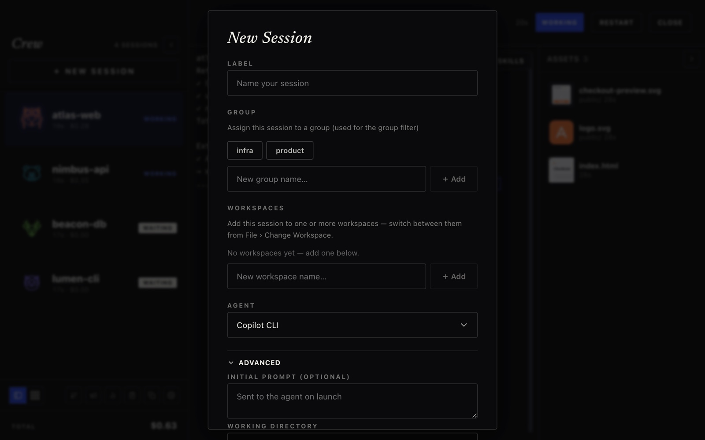
Groups vs. workspaces.
Two ways to organize sessions — they sound similar but do different jobs.
One label per session
A single tag like frontend or infra. Groups cluster sessions under headers when you sort “By group” — but a session belongs to exactly one.
Filter across many
A session can belong to several workspaces (e.g. “July” and “Client X”). Switching the active workspace filters what you see — hidden sessions keep running.
Switch the active workspace from the command palette (⌘K → “Workspace: …”) or File › Change Workspace. When a filter is on, the sidebar shows the active workspace with a one-click way to clear it.
Sorting & grouping.
The sort button (in the sidebar toolbar and the grid top bar) groups your sessions four ways.
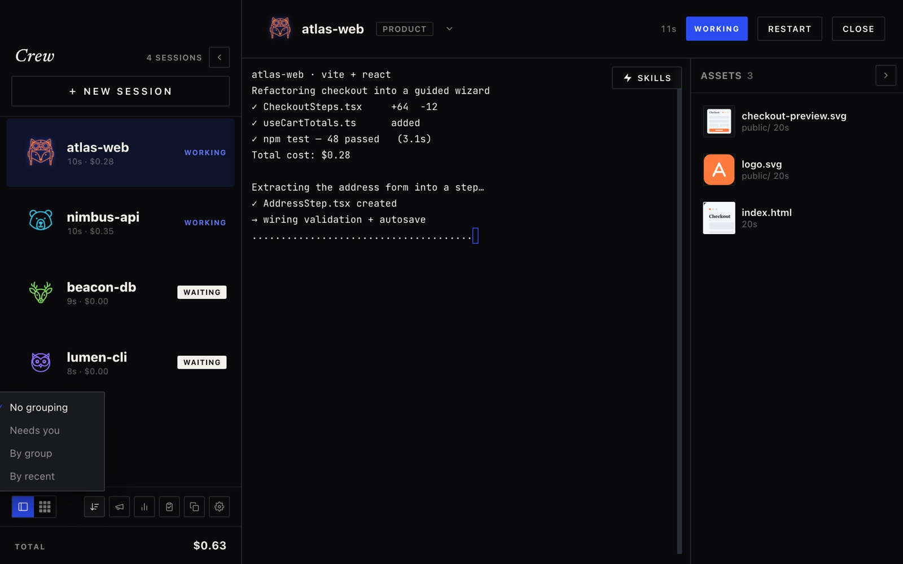
- No grouping — one flat, drag-to-reorder list.
- Needs you — splits into “Needs you” and “Working” so blocked agents rise to the top.
- By group — clusters by each session’s group tag (drag a session onto a header to move it).
- By recent — buckets by how recently you prompted it (Last 30 min / 2 hrs / day / week+).
Grouping applies in the grid too — each group becomes its own band:
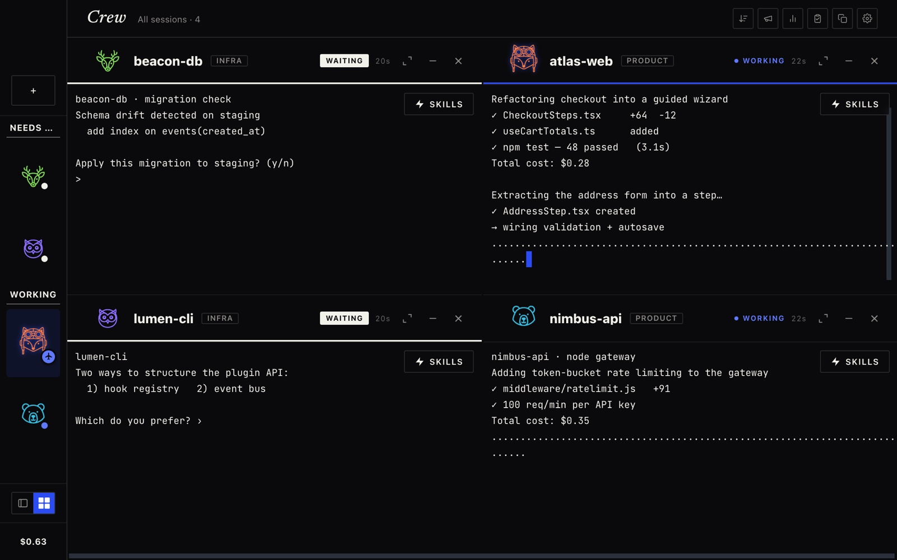
The assets pane.
The panel on the right of focus view watches the session’s working directory and previews what your agent creates — images, HTML pages, PDFs, video and audio — right inside Crew.
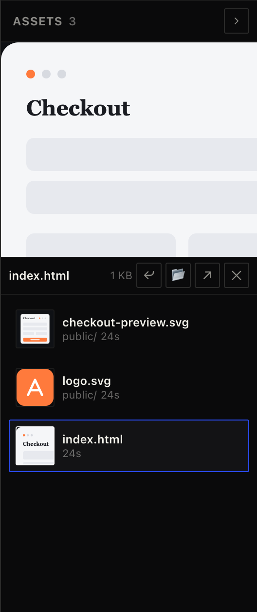
- Preview inline — click a page/PDF/video to preview it; click an image to open it in your OS previewer.
- Insert path (⤶) — drops the file’s path into the terminal, ready to reference in your next prompt.
- Reveal in Finder (📂) and Open with default app (↗).
- Clicking a file path in the terminal previews it here automatically.
- Collapse the whole pane to a slim rail when you want more terminal.
Skills.
The ⚡ Skills chip above the terminal opens a gallery of reusable actions, grouped into categories. Crew reads the skills your agent actually has installed (Copilot / Claude), and you can pin favorites or add your own.
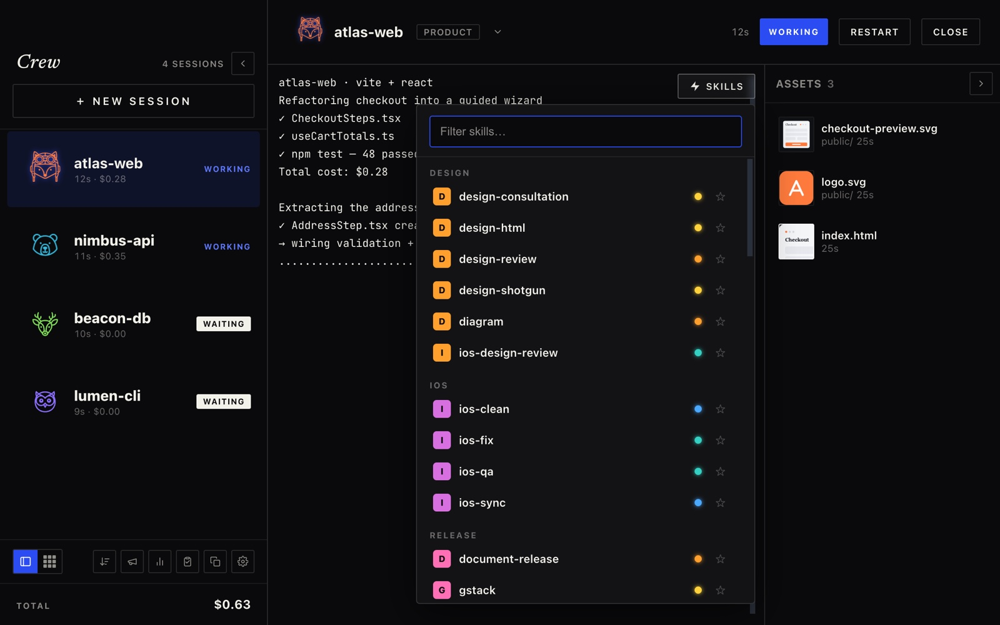
- Filter to find a skill fast; favorites pin to the front.
- Click a skill to read its description; click again (or Invoke) to type
use <skill> to …into the session for you. - ＋ Add your own custom skills (name, invoke token, description) — stored locally.
Broadcast.
Send the same message to several sessions at once — great for “run the tests” or a coordinated checkpoint.
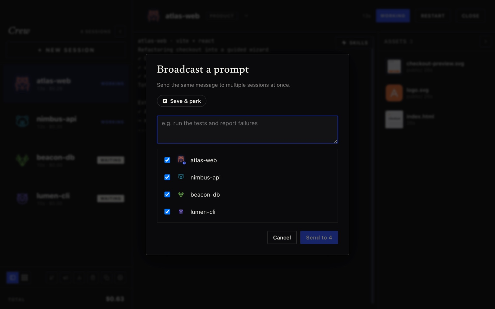
Activity & spend.
Two tabs. Spend totals how long each session kept you waiting, what it cost, and any credits used. Activity is a commit feed — the git history across your open sessions' repos, newest first, with release commits highlighted.
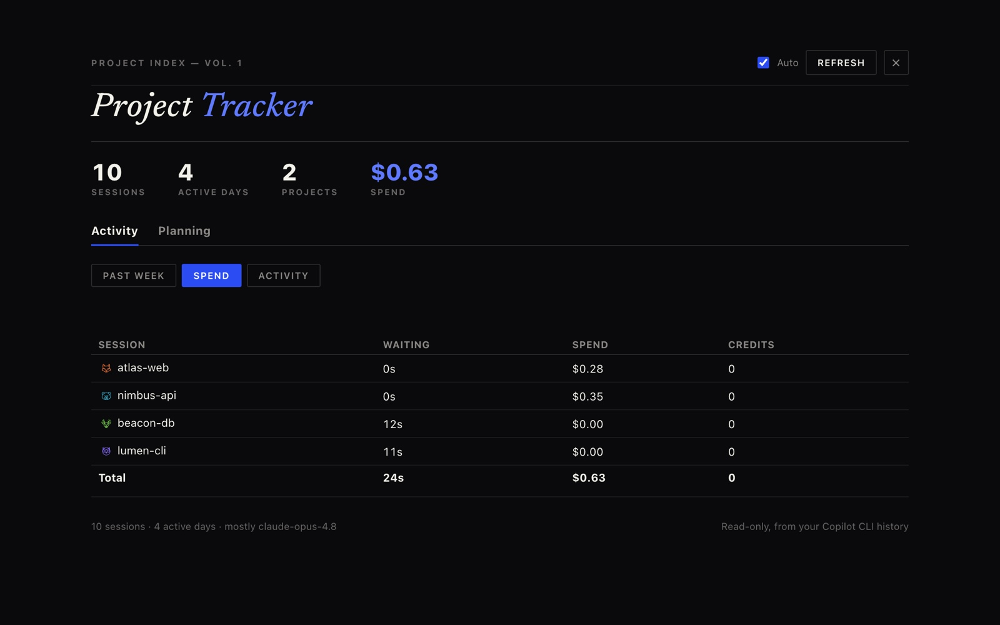
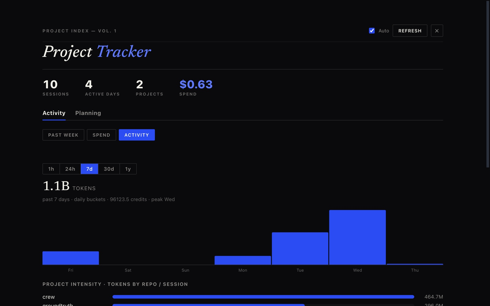
The Project Tracker.
The clipboard button opens a full-screen Project Index — a live dashboard built from the working directories of your open sessions. Each session becomes a project card, derived straight from disk: git status, version, next steps, suggestions, and commit history.
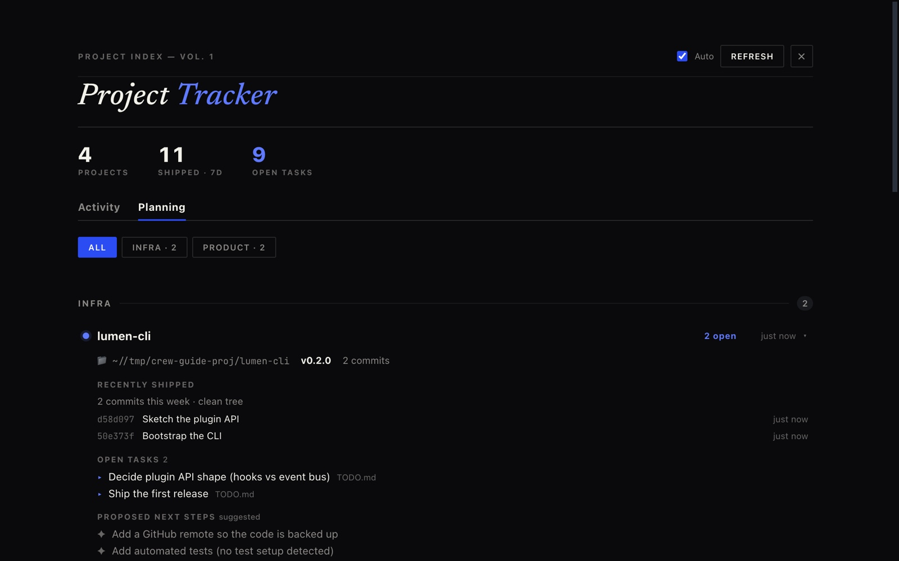
- Status at a glance — a colored dot (active / recent / stale) and an “N open” task count per project.
- Next steps — pulled from each repo's
TODO.md,ROADMAP.mdor a “Next steps” heading; Suggestions are auto-derived (a missing README, stray TODO/FIXME markers…). - Feature history — expand a project to read its changelog + commit history.
- ▶ Launch local — start a project's dev server right from the tracker (Vite / Next / Node), then stop it again.
- Grouped by your session tags, filterable, with an Auto re-scan every 20s.
Transcripts.
Turn on Capture transcripts in Settings and Crew saves each session’s output locally so you can search across everything and export a session later. It never leaves your machine.
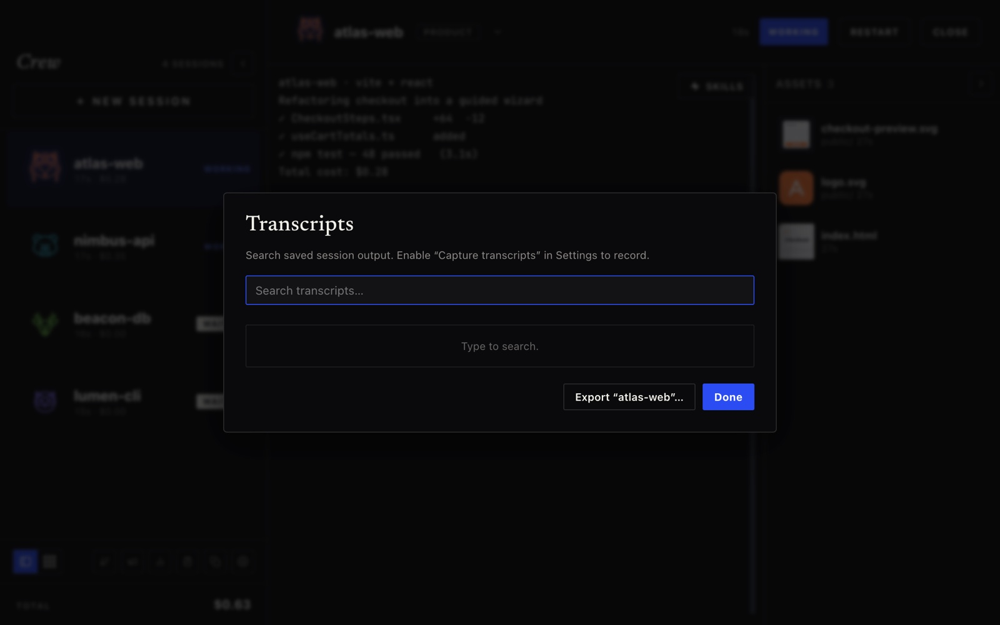
Command palette & shortcuts.
Press ⌘K for a fuzzy quick-switcher: jump to any session, run any action, or switch workspace without touching the mouse.
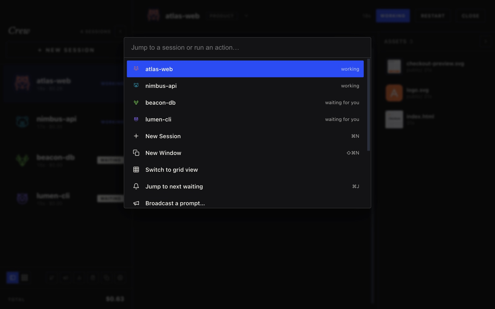
Settings.
Everything is off-by-default-sensible, but you can tune it all.
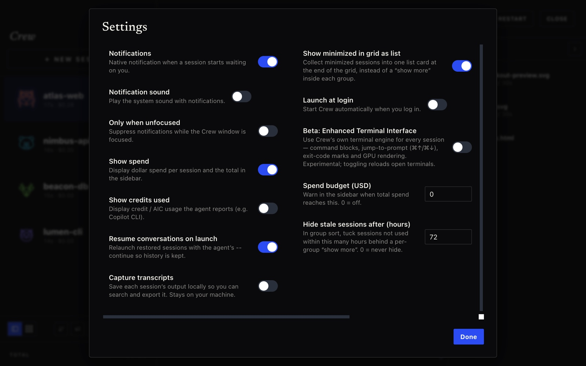
- Notifications — native alert (with optional sound) when a session starts waiting; optionally only when Crew isn’t focused.
- Show spend / credits — per-session and total in the sidebar.
- Resume conversations on launch — relaunch restored sessions with the agent’s
--continue. - Capture transcripts and Launch at login.
- Spend budget — warn once total spend crosses a number; Hide stale sessions after N hours in group sort.
Autopilot-aware.
When an agent is running unattended — approving its own edits — its character puts on a pilot costume (goggles + an ✈ badge), and a little takeoff animation plays across the header. You can tell at a glance which agents are flying solo and which are working with you in the loop.
Windows & the menu bar.
- Multiple windows — ⇧⌘N opens another window onto the same crew, so you can put the grid on one display and a focused session on another.
- Menu-bar badge — a live count of how many sessions are waiting sits in your macOS menu bar; a native notification fires the moment one needs you.
- 100% local — Crew owns the terminals on your machine. No account, no network, no telemetry.
Getting started.
That’s the whole tour. Download Crew, launch a couple of agents, and let the crew do the work — you’ll get pinged the moment one needs you.
↓ Download for macOS Back to the overview →
↑ Back to top